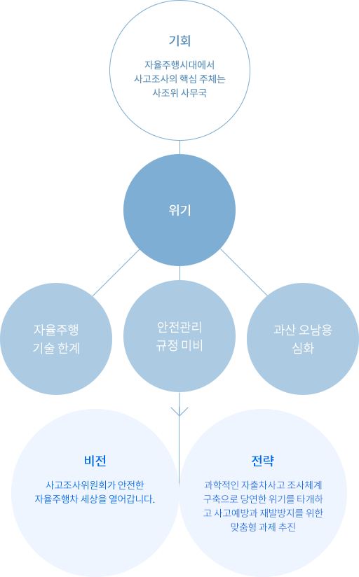

재심의 접수안내
재심의 제도
조직안내
조직체계(1 사고조사위원회,1 사무국)
위원회 비전은 다음 주요업무를 성실히 수행합니다.

핵심과제
- 피해자
- 위원회 사무국 운영 조기 안정화 사고 조사처리지침, 사무처리요령 제정 등
- 과학적 사고조사 인프라 구축 인지센서 오작동확인 및 제어진단, 추출장비 등
- 보험업체
- 자율주행 사고정보 민간 제공 홈페이지, 데이터관리, 영상정보 동기화 등
- 신속한 사고조사 원인분석‧규명 Lv.3 자율차G90 출시 前 임시운행차사고 시범조사
- 제작사
- 사고예방‧재발방지 안전대책 발굴 사고유형별 과실비율, 사고예방 안전정책 개발 등
- 조사권한 강화 위한 법제 보완 분과위원회, 사법경찰제, 상임위원 신설 등